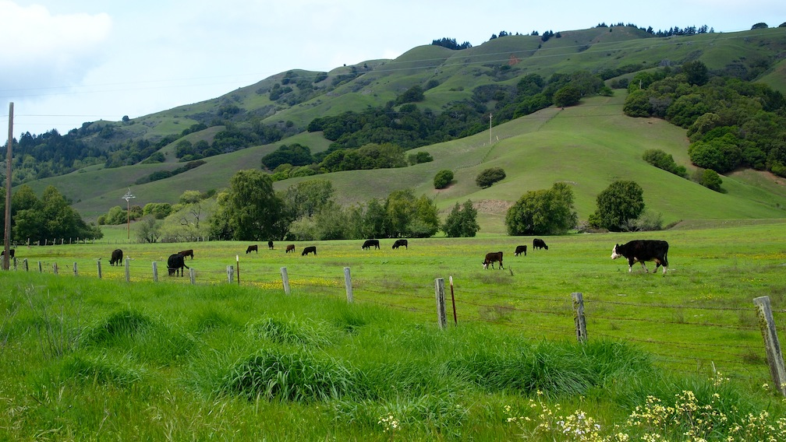
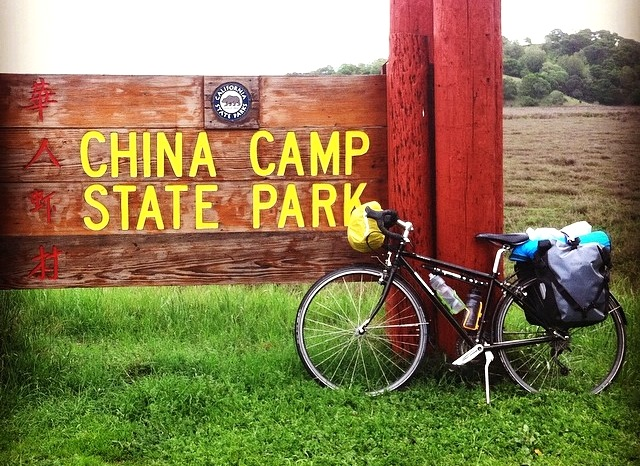
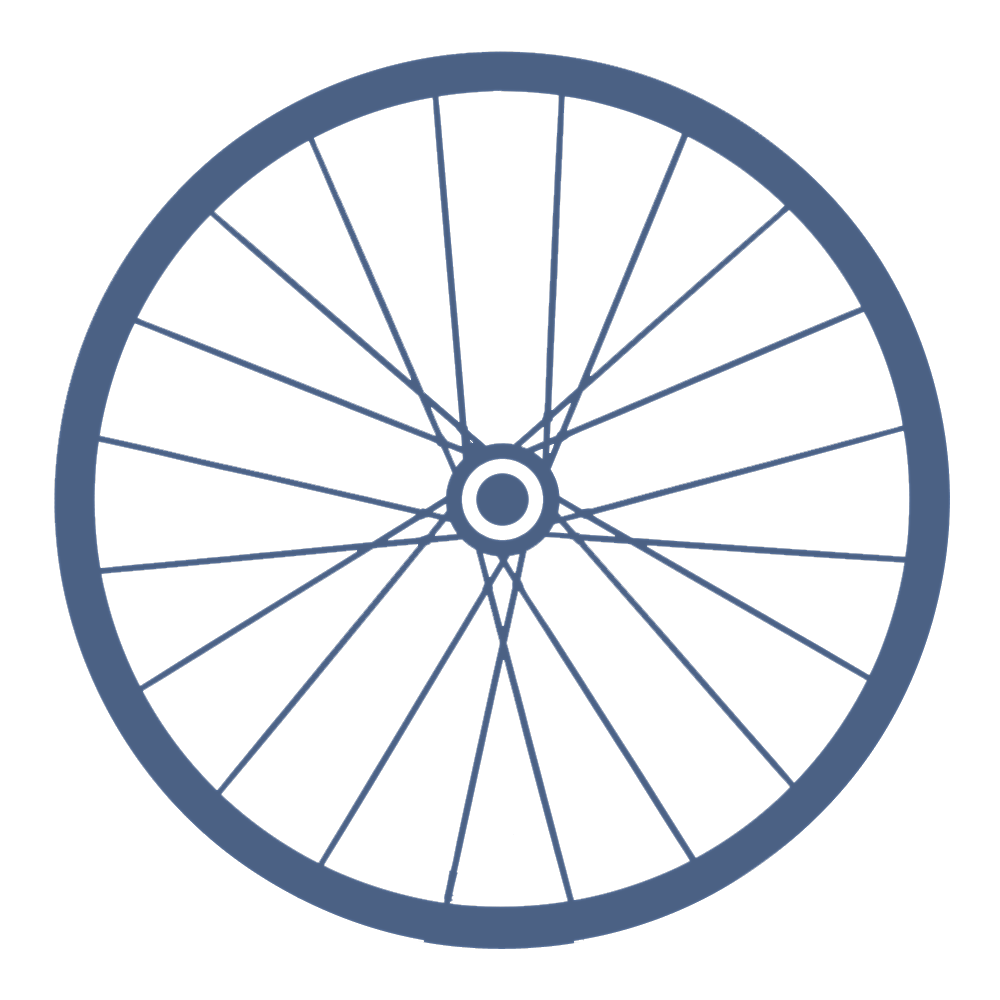

Wednesday, April 16, 2014
Journal entry from day 2 of the mini bike trip:
WOW, what an intense and fantastic day! Probably more intense than I anticipated, but there were so many beautiful, wonderful moments. I got a leisurely start this morning at China Camp. I putzed around making breakfast and packing up my wet tent while trail runners and mountain bikers whizzed by the trail right next to my campsite.
Continue Reading...

Tuesday, April 15, 2014
Before taking off on a four month solo bike trip I figure it's probably a good idea to know what you're getting yourself into. Before this year I could count the number of nights I'd spent in a tent on two hands, and I had definitely never gone camping alone. While I'm used to biking around town, I'd never done any longer tours or highway riding by myself. So, I decided to plan a two-night bike trip to test out my gear and get a little taste of bike touring close to home before I set off on the big trip.
Continue Reading...

“All journeys have secret destinations of which the traveler is unaware.”
-Martin Buber
Tuesday, April 8, 2014
The more I think about bike travel the more it makes sense to me at this juncture in life. There are so many reasons why this feels like the right thing to do, but here are the major ones.
Continue Reading...
Monday, April 7, 2014
Growing up in the sprawling suburbs of Houston, I hated the fact that there was no choice but to drive everywhere and spend time every day sitting in traffic. I hated ugly 18-lane spaghetti freeways and expansive Costco parking lots. I hated the fact that there were few safe places for me to play as a kid and that whenever I wanted to go somewhere my parents had to drive me.
Continue Reading...
Sunday, April 6, 2014
When I was a senior in college studying in Spain, I had many conversations with my Polish roommate, Agata, about the future. I remember one time we were sitting in a cafe, talking in Spanish (our common language) about our impending return to the real world. I was mere months away from graduating into a tough job market with no plan and no real idea what I wanted to do or be.
Continue Reading...

Chasing the Dream Across America
Saturday, March 22, 2014
Hello world! This is my first post. I'll be using this site to keep my friends and family updated on the progress of my bike trip, and if I manage to inform or inspire anyone else who is contemplating their own long-distance bike tour one day then all the better! I start biking on May 2nd, but I'll be blogging about my preparation before then, so check back for updates.